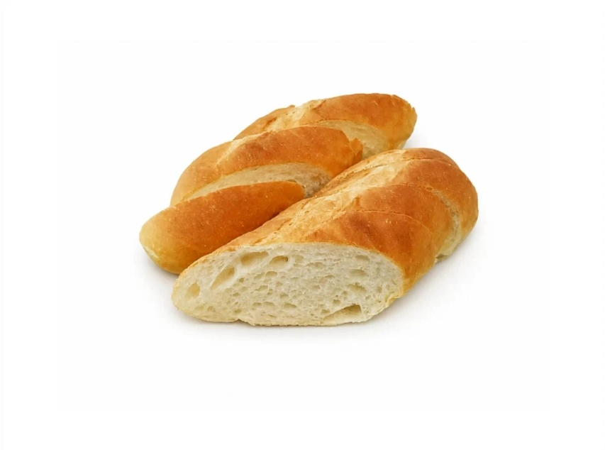
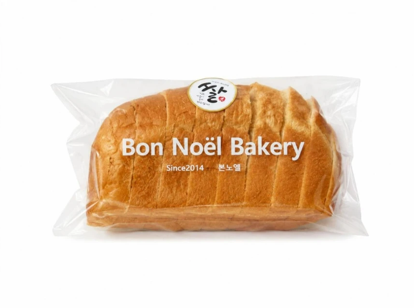

My Baby's First Bread
우리 아이
첫 빵
재료가 단순한 빵부터 시작해요

바게트
계란·우유·설탕·버터
안 넣었어요
작은 쁘띠 바게트도 있어요
(치즈·초코·마늘 바게트 제외)

쌀식빵
밀가루 대신
쌀가루 99%
계란 안 넣었어요
설탕·버터·글루텐 1% 들어가요
Bon Noël
겉껍질은 떼고 부드러운 속살만, 작게 찢어 조금씩 주세요.
알레르기가 걱정되면 소아과 선생님과 먼저 상의해 주세요. 성분은 직원에게 물어봐 주세요.